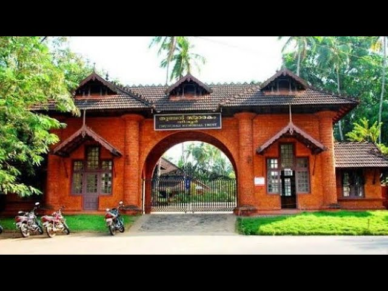

Kadalundi Bird Sanctuary

MINI OOTY

Malappuram, a district in the Indian state of Kerala, is a land of diverse landscapes and rich cultural heritage. Nestled between the Western Ghats and the Arabian Sea, it boasts a unique blend of natural beauty and historical significance. This district is known for its picturesque landscapes, including rolling hills, serene rivers, and lush green forests. Malappuram is also recognized for its vibrant cultural tapestry, with a mix of traditions, festivals, and languages. The region's historical landmarks, such as the grand Thirunavaya Temple and Kottakkal Arya Vaidya Sala, reflect its deep-rooted heritage. Visitors can explore the tranquility of the Nilambur Teak Plantations or immerse themselves in the local culture by attending traditional festivals like the Malappuram Nercha. Malappuram beckons travelers with its captivating scenery, warm hospitality, and a profound connection to the heart of Kerala's cultural and natural riches